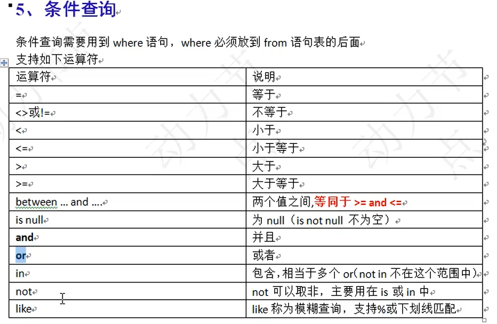

DQL
一、简单查询：
1、语法格式：select 字段名1，字段名2，字段名3，...from表名；
2、给查询结果的列重命名
select 字段名1，字段名2 as 重命名后的名字from emp；（关键字as可以省略）
3、查询所有字段
select*from 表名;(效率低，开发不建议使用，私下可以用)
二、条件查询：
语法格式：
select 字段名，字段名...from 表名 where 条件;
执行顺序 先from 再where，最后select。


案例： between...and...（闭区间）
找出工资在1100和3000之间的员工，包括1100和3000
select ename，sal from emp where sal between 1100and3000;
between...and...还可以应用在字符串方面（左闭右开）
字符串第一个字母参与运算。
and和or的优先级问题：and的优先级较高
案例：
找出薪资大于1000的并且部门编号是20或者30的员工
错误代码：
select ename，sal，deptno from emp where sal>1000and deptno =20or deptno=30;(因为and的优先级较高，会将sal>1000and deptno=20先执行，和要求不符)
修改为：
select ename，sal，deptno from emp where sal>1000and (deptno =20or deptno=30);
关键字in
in等同于or：
案例：
找出工作岗位是MANAGER和SALESMAN的员工
select ename ，job from emp where job=‘SALESMAN’or job=‘MANAGER’;。
等同于
select ename，job from emp where job in（‘SALESMAN’,'MANAGER'）;
not in ：不在选定值中的值。
模糊查询like：
两个符号（%，_）
%代表任意多个字符，_代表任意一个字符
案例：
找出名字里含有‘O’的员工
select ename from emp where like‘%O%’；
找出第二个字母是A的员工：
select ename from emp where ename like‘_A%’;
找出名字中含有_的员工：
select name from emp where name like‘%\_%’；
排序（升序和降序）
默认是升序，asc表示升序，desc表示降序。
案例
1、按照工资升序，找出员工名和薪资
select ename，sal from emp order by sal；
2、按照工资的降序排列，当工资相同的时候再按照名字的升序排列
select ename,sal from emp order by sal desc,ename asc;
3、找出工作岗位是SALESMAN的员工，并且要求按照薪资的降序排列
select ename，job，sal from emp where job=‘SALESMAN’ order by sal desc；（执行顺序 from-->where-->select-->order ）
分组函数/多行处理函数（所有的分组函数都是对“某一组”数据进行操作的）
最初是多行，运算完变成一行。
分组函数自动忽略null；
count 计数
sun 求和
avg 平均值
max 最大值
min 最小值
count(*)和count(具体的某个字段)的区别
count(*):不是统计某个字段中数据的个数，而是统计总记录条数（和某个字段无关）
count(comm):表示统计comm字段中不为null的元素。
案例
找出工资总和
select sum(sal) from emp;
案例
找出工资高于平均工资的员工
select avg(sal) from emp;//平均工资
select ename,sal from emp where sal>avg(sal);
报错
原因：SQL语句当中有一个语法规则，分组函数不可直接使用在where字句中。（因为group by在where执行之后执行，而分组函数在group by之后执行）
修改：
select ename，sal from emp where sal>(select avg(sal)from emp);
单行处理函数
运算多少行，得到多少行。
计算每个员工的年薪
select ename,(sal+ifnull(comm,0))as yearsal from emp;
ifnull()空处理函数
ifnull(kenn)
group by和having
group by：按照某个字段或者某些字段进行分组。
having：having是对分组之后的数据进行再次过滤。
案例：找出每个工作岗位的最高薪资
select max(sal)from emp group by job;
注意：分组函数一般都会和group by联合使用，因而被叫作分组函数。并且任何一个分组函数都是在group by执行结束后才会执行的。 当没有group by的话，整张表自成一组。
注意：当一条语句中有group by的话，select后面只能跟分组函数和参与分组的字段。
案例：（多字段联合分组）
找出每个部门不同工作岗位的最高薪资
select depton,job,max(sal) from emp group by deptno,job;
注意：
1、having不能单独使用，必须和group by连用。
2、尽量使用where过滤，实在不行在使用having过滤。
找出每个部门的最高薪资，要求显示薪资大于2900的数据
一、select max(sal),deptno from emp group by deptno having max(sal)>2900;//效率低
二、select ,max(sal),deptno from emp where sal>2900 group by deptno ;
总结
一个完整的DQL语句怎么写？
select
...
from
...
where
...
group by
...
having
...
order by
...
查询结果集去重：
distinct ( distinct只能出现在所有字段的最前面，表示后面所有的字段联合起来去除重复记录)
案例
select distinct job from emp;
案例
统计岗位的数量
select count( distinct job )from emp;
连接查询
1、连接查询也叫多表查询。
2、连接查询的分类
根据语法出现的年代可分为：SQS92，SQL99。
根据表的连接方式划分：
1、内连接
1、等值连接
2、非等值连接
3、自连接
2、外连接
1、左外连接
2、右外连接
3、全连接
笛卡尔积现象：当两张表进行连接查询的时候，没有任何条件限制，最终的查询结果是两张表记录条数的乘积。
表的别名：
select e.ename,d.dname from emp e,dept d;
表的别名有什么好处？
1、执行效率高。
2、可读性好。
怎么避免笛卡尔积现象？
加条件进行过滤。
思考：避免了笛卡尔积现象，会减少记录的匹配次数吗？
不会，次数并没有减少，只是显示的是有效的记录。
例如：
select
e.ename,d.dname
from
emp e,dept d
where
e.deptno=d.deptno;//SQL92
内连接之等值线接：条件是等量关系
案例：查询每个员工的部门名称，要求显示部门名和员工名。
SQL92：（过时）
select
e.ename,d.dname
from
emp e,dept d
where
e.deptno=d.deptno;
SQL99:(常用)
select
e.ename,d.dname
from
emp e
join
dept d
on
e.deptno=d.deptno;
语法：
select
...
from
...A
inner join
...B
on
连接条件
where
...
inner可以省略，带着inner目的是可读性好，区分内连接和外连接。
SQL99语法结构更清晰，将连接条件和过滤条件分离开。
内连接之非等值连接：条件是非等量关系
案例
select
e.ename,e.sal,s.grade
from
emp e
join
salgrade s
on
e.sal between s.losal and s.hisal;
内连接之自连接：
一张表，自己连接自己。
外连接
外连接和内连接的区别
内连接： 假设表A和B进行连接，使用内连接 的话，凡是A表和B表能够匹配上的记录查询出来，匹配不上的忽略，这就是内连接。AB两张表没有主副之分。
外连接： 表A和表B进行连接，使用外连接的话，AB两表中有一张是主表，有一张是副表，主要查询主表中的数据，捎带查询副表，当副表中的数据没有和主表匹配上，副表自动模拟出NULL与之匹配。
外连接之左外连接： 表示左表为主表。
select
a.ename as'员工',b.ename'领导'
from
emp a
left outer join
emp b
on
a.mgr=b.empno;
外连接之右外连接：表示右表为主表。
select
a.ename as'员工',b.ename'领导'
from
emp b
right outer join
emp a
on
a.mgr=b.empno;
//outer表示外连接，可以省略。
左连接有右连接的写法，右连接也会有相应的左连接的写法。


全连接：
三张表查询：
select
e.ename,d.dname,s.grade
from
emp e
join
dept d
on
e.deptno=d.deptno
join
salgrade s
on
e.sal between s.losal and s.hisal;
子查询：
select语句中嵌套select，被嵌套的select是子查询。
子查询可以出现在哪里？
select
...(select)
from
...(select)
where
...(select)
from中嵌套select可以将select产生的新表作为基表查询。
where中嵌套select可以解决where中不能使用分组函数的问题。
union（可以将查询结果集相加）
查询结果集列数要相同
找出工作岗位是SALESMAN和MANAGER的员工
第一种：select ename,job from emp where job='MANAGER'or job='SALESMAN';
第二种：select ename,job from emp where job in('MANAGER','SALESMAN');
第三种：union
select ename,job from emp where job='MANAGER'
union
select ename,job from emp where job='SALESMAN';
limit（mysql特有）
1、作用：取结果集中的部分数据。
2、Oracle中有一个相同的机制，叫做rownum。
3、语法机制：limit startIndex，length
startIndex表示起始位置，length表示取几个。
取工资前5名的员工
select ename,sal from emp order by sal desc limit 0,5;
select ename,sal from emp order by sal desc limit 5;
limit是sql语句最后进行的环节。

DDL（数据定义语句）
DDL用于创建数据库对象，如表，视图，索引。
DML（数据操作语句）
DML语句用来检索和修改数据库的内容
常用编程语句：
1.IF...ELSE

2.BEGIN...END

3.WHILE

4.GOTO语句和标签

5.WAITFOR语句（延迟后面的语句执行）